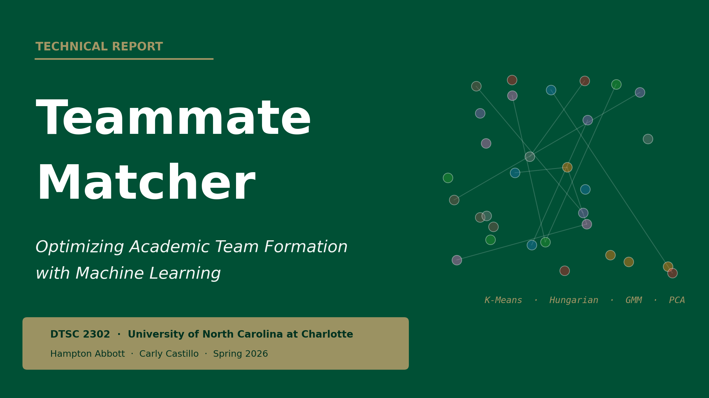
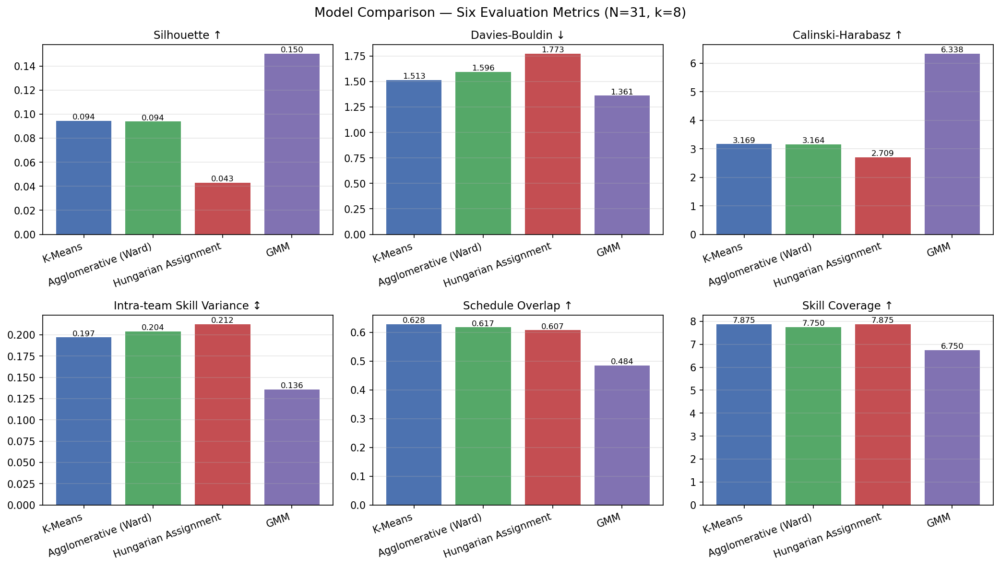

Introduction & Research Questions

Abstract
Academic team formation in data science courses is typically left to random assignment or student self-selection, producing teams with scheduling conflicts, mismatched work styles, and uneven skill distribution. This report presents the Teammate Matcher, a data-driven application that optimizes academic team formation using four machine learning approaches: K-Means clustering, Agglomerative hierarchical clustering, size-constrained assignment via the Hungarian Algorithm, and Gaussian Mixture Models (GMM). Primary survey data were collected from 31 students in DTSC 2302, capturing availability, work style, communication preferences, and self-rated technical skills. Responses were preprocessed through a nine-step pipeline producing 50 features across two feature sets: compatibility features (availability + work style, used for similarity-based models) and complementarity features (8 skill dimensions, used for diversity-based GMM). Hungarian Assignment produced the most practically deployable configuration — balanced teams of 3–6 students with near-complete skill coverage (7.875/8 dimensions per team) — while GMM identified latent skill archetypes via soft membership probabilities. The ambiguity-flag mechanism (max posterior < 0.60) returned zero borderline cases on this cohort: with N = 31 and full-covariance components, GMM converges to near-deterministic posteriors. The mechanism is correct; this cohort simply does not exercise it.
Principal Component Analysis confirmed that availability and work-style are the primary axes of student differentiation (PC1 = day-of-week availability, 15.8%; PC2 = conflict/meeting style, 13.5%), with self-rated skills appearing only as a secondary axis from PC3 onward. This supports the decision to run skill-based clustering on skills alone rather than combining feature sets.
Problem Statement
The success of academic group projects depends heavily on team composition. Prior research has established that random assignment and student self-selection both produce suboptimal outcomes — including uneven distribution of work, scheduling conflicts, and mismatched work styles (Kyprianidou et al., 2012). These issues hinder the pedagogical goals of collaborative assignments and cause measurable frustration among students.
The Teammate Matcher addresses this problem by developing an automated, data-driven recommendation system for team formation, using directly measured student attributes collected via primary survey data. Unlike prior approaches that rely on indirect behavioral proxies (e.g., Learning Management System click counts, course forum activity), this system uses attributes most relevant to actual teamwork: self-reported technical skills, weekly availability, communication preferences, and work style.
Research Questions
This project is guided by three research questions:
- RQ1. How can we quantify and represent student skills, availability, and work styles using direct self-report to facilitate effective team matching?
- RQ2. Which clustering or optimization algorithms produce the most balanced and compatible student teams — and does the answer differ when optimizing for similar teams versus complementary teams?
- RQ3. What student attributes are most predictive of cluster separation, and which features contribute most to team differentiation?
A key framing decision distinguishes this work from prior approaches: we treat similarity (grouping students with compatible schedules and work styles) and complementarity (ensuring skill diversity within teams) as distinct objectives evaluated separately. No single clustering algorithm naturally optimizes both.
Societal Relevance
Team assignment is not a neutral algorithmic problem. Choices in feature selection, normalization, and model objective carry equity implications:
- Skill diversity without constraint could isolate lower-confidence students onto a single team.
- Schedule homogeneity could inadvertently group students by implicit socioeconomic factors (e.g., students who work nights share low daytime availability).
- Self-reported skills are subject to social desirability bias — students may over-rate prestigious skills (ML) and under-rate others (writing).
These concerns are revisited in Section 8.
Dataset & Survey Design
Why Primary Data Collection?
The project guidelines require a dataset that is not sourced from Kaggle or the UCI Repository. Beyond that requirement, there is a principled reason for primary data collection:
No public dataset contains the information needed for this problem. Team formation requires direct measurement of:
- Schedule availability — not inferable from activity logs (the oft-used Open University Learning Analytics dataset (OULAD) encodes time as "days since module start," not as calendar day-of-week).
- Self-rated skills across multiple dimensions — not inferable from click counts on course videos.
- Work style and conflict approach — not captured in any educational dataset we could identify.
- Communication channel preferences — likewise unrecorded elsewhere.
We therefore designed and deployed an anonymous student survey in the DTSC 2302 course, collecting primary data directly from the population the model is intended to serve.
Survey Instrument
The survey was deployed via Google Forms and organized into five sections (full instrument in survey/survey_questions.md):
- Section 1 — Context: Course code, year in school — scope/demographic filter.
- Section 2 — Schedule & Availability: Days (checkbox), time slots (checkbox), weekly hours, meeting mode — schedule compatibility features.
- Section 3 — Technical Skills: 8 items, Likert 1–5 — skill profile / complementarity.
- Section 4 — Work Style: Role, deadline approach, communication, check-in, collaboration, detail focus, conflict style — work-style compatibility.
- Section 5 — Self-Assessment: GPA band (optional), top contributions, biggest pain point — self-knowledge signals.
Survey design choices:
- Ordinal Likert for skills (1–5) captures relative confidence without forcing binary self-categorization.
- Checkbox multi-select for schedule allows expression of disjoint availability (e.g., "weekends only" or "MWF plus evenings").
- Optional GPA was selected to reduce response pressure; we will see in Section 5.4 that GPA has a moderate (not negligible) effect on assignments, motivating a deployment protocol that presents both with-GPA and without-GPA configurations to the instructor.
- "Prefer not to say" option for GPA explicitly signals that the student chose not to respond (distinguishable from accidental skip).
Dataset Characteristics
- Responses collected: 31
- Raw CSV columns: 27 (includes 2 empty Google Forms artifacts)
- Features after preprocessing: 50
- Missing values: 2 (both GPA)
- Year distribution: Juniors 13, Sophomores 11, Freshmen 4, Graduate 2, Senior 1
- Course code variants in raw data: 11 (all normalize to DTSC 2302)
Sample size rationale: 31 responses is sufficient to form 7–8 teams of 3–5 students, the target deployment scale. It limits statistical generalization, but the goal is not population inference — it is optimal team formation within this cohort.
Cohort availability profile. The 11-dimensional availability vector for each student — 7 day-of-week binaries plus 4 time-of-day binaries — exhibits substantial heterogeneity, which is the variance the similarity-based models operate on. Weekday afternoons and evenings are dense; weekends and the late-night slot are sparse.
This descriptive view foreshadows the PCA finding in Section 6: day-of-week availability is the primary axis along which students differentiate.
Anonymity & Quasi-Identifier Analysis
The survey promised anonymity. The raw CSV contains a Timestamp column (exact submission time to the second) which is a quasi-identifier: in a class of 31 students who know each other, "who submitted at 11:30 AM on April 17th" can narrow down the respondent. Two protective measures address this:
- The raw CSV is excluded from the public repository via
.gitignore and stays local only.
- The processed CSV is row-shuffled before saving (
preprocess.py Step 9, random_state=42), eliminating the correlation between row position and submission order. Without the shuffle, a reader with access to the Google Forms response sheet could re-identify rows by matching timestamps to row indices.
The processed CSV published on GitHub contains no names, emails, student IDs, timestamps, or ordering artifact — only encoded, normalized feature values.
Preprocessing Pipeline
The preprocessing pipeline (src/preprocess.py) implements nine sequential steps. Each design decision is justified below.
Step 1 — Load Raw CSV
Raw Google Forms export is read with default pandas CSV parsing. No modifications to the on-disk file — we preserve the raw artifact in case preprocessing needs to be re-audited.
Step 2 — Column Cleaning & Artifact Removal
Actions:
- Rename 25 verbose Google Forms question strings to short internal names (e.g., "Which days are you generally available to meet with your team?" →
_days_raw).
- Drop two empty artifact columns (
Column 25, Column 25.1) generated by Google Forms' checkbox export quirk.
- Drop the
Timestamp column (privacy; not analytically relevant).
- Normalize
course_code to "DTSC 2302" (11 free-text variants all refer to the same course).
Justification: Full question strings are infeasible to use as code identifiers. The normalized course_code allows future cross-section extension without changing the schema. Timestamp is dropped both for privacy (Section 2.4) and because time-of-submission has no causal relationship to team compatibility.
Step 3 — Availability Encoding (Checkbox Expansion)
Action: Expand the comma-separated _days_raw and _times_raw strings into 11 binary columns:
avail_mon avail_tue avail_wed avail_thu avail_fri avail_sat avail_sun
avail_morning avail_afternoon avail_evening avail_latenight
Justification: Two students' availability can now be compared directly using set-based metrics. The Jaccard index between two binary availability vectors a, b ∈ {0,1}¹¹ is J(a, b) = |a ∩ b| / |a ∪ b|, which directly quantifies scheduling overlap. We use this as the Schedule Overlap evaluation metric in Section 5.
Alternative considered: We could have grouped days into "weekday" vs. "weekend" blocks to reduce dimensionality. Rejected — it would collapse genuine variance (a student available only Tuesday/Thursday is very different from one available only Monday/Wednesday/Friday, but both are "weekday").
Step 4 — Ordinal Encoding
Action: Map ordered categorical responses to integers preserving their natural ordering:
year: Freshman=1, Sophomore=2, Junior=3, Senior=4, Graduate=5weekly_hours: <3hrs=1, 3–5=2, 6–9=3, 10+=4role_pref: Follower=1, Specialist=2, Flexible=3, Leader=4deadline_style: Last-minute=1, Steady=2, Early=3checkin_freq: As needed=1, Weekly=2, Few/week=3, Daily=4collab_style: Independent=1, Mix=2, Close=3gpa_band: <2.5=1, 2.5–3.0=2, 3.0–3.5=3, 3.5–4.0=4
Justification: These variables have semantically ordered response options. Encoding as integers allows distance-based algorithms to correctly interpret "A Steady worker is between a Last-minute worker and an Early worker" rather than treating all three as mutually unrelated categories (as one-hot would imply).
Assumption — equal spacing: Ordinal encoding implicitly assumes equal distance between adjacent categories. This is debatable for some variables (e.g., the jump from "10+ hours/week" to "3–5 hours" is likely larger than the jump from "6–9" to "3–5"). We accept this trade-off because Min-Max normalization (Step 8) projects all ordinals to [0, 1] where the absolute distances matter only in relative terms during clustering.
Step 5 — One-Hot Encoding
Action: Expand four nominal (unordered) variables into binary indicator columns:
meeting_mode → meeting_inperson, meeting_remote, meeting_noprefcomm_pref → comm_text, comm_email, comm_discord, comm_video, comm_inpersonconflict_style → conflict_direct, conflict_private, conflict_natural, conflict_deferpain_point → pain_schedule, pain_workload, pain_conflict, pain_communication, pain_motivation
Justification: These categories have no semantic ordering. A student preferring Discord is not "numerically between" one preferring email and one preferring Zoom. Ordinal encoding would inject a spurious distance metric; one-hot is the correct representation.
Assumption — mutual exclusivity: Each one-hot block sums to exactly 1 per student. This is enforced by the single-select Google Forms item. No data validation was needed.
Step 6 — Contribution Multi-Select Encoding
Action: Expand _contrib_raw (a comma-separated multi-select) into six independent binary indicator columns: contrib_technical, contrib_creative, contrib_organization, contrib_writing, contrib_morale, contrib_qa.
Design decision: The survey asked for "up to 2" contributions, but 16 of 31 respondents selected 3 or more items. We did not enforce the limit. Instead, each column is an independent yes/no indicator. The decision was driven by two considerations:
- Retroactively truncating responses would require an arbitrary choice of which items to keep.
- Over-selection carries information — it indicates that the respondent sees themselves as multi-faceted rather than specialized, which is itself a useful feature.
Step 7 — Missing Value Handling
Action:
- GPA: 1 row was genuinely missing, 1 row answered "Prefer not to say." Both are treated as NaN and imputed with the median ordinal band (median = 4, corresponding to the "3.5 – 4.0" band).
- Drop any row where >20% of numeric features are missing. In practice no rows were dropped.
Justification — median over mean: GPA is an ordinal categorical variable (four bands, integer-coded). Mean imputation could produce non-integer values (e.g., 2.37) that don't correspond to any valid response band. Median preserves the ordinal scale and the encoding invariant that every value maps to a valid category.
Trade-off: Median imputation biases imputed rows toward the cohort's modal response. With 29 of 31 students having a valid GPA and the cohort concentrated in the 3.5–4.0 band, the median value (4) is also the modal observed value — so the two imputed rows are statistically indistinguishable from the majority of the cohort on this feature. (Note: this is about the choice of imputation strategy; the separate question of whether GPA itself is influential as a feature is addressed in Section 5.4, where the answer is "moderately so.")
Step 8 — Min-Max Normalization
Action: Scale all non-binary numeric features to [0, 1] using x_scaled = (x − x_min) / (x_max − x_min). Binary features (availability indicators, one-hot columns, contribution indicators) are already in {0, 1} and are not re-scaled — this is important, since re-scaling a constant-value binary feature would divide by a zero range.
Justification: K-Means, Agglomerative, and Hungarian Assignment all rely on Euclidean distance. Without normalization:
- Skill ratings (raw range 1–5) contribute up to (5−1)² = 16 per feature to squared distance.
- Binary availability features contribute at most (1−0)² = 1 per feature.
Skills would dominate distance calculations roughly 16-fold, effectively ignoring schedule compatibility — which is exactly backwards for the similarity objective. Min-Max equalizes the per-feature contribution to distance.
Alternative considered: Standardization (zero mean, unit variance) is common but would produce features outside [0, 1] and would behave poorly on the many skewed binary distributions (e.g., avail_sat, where only 6/31 students are available).
Step 9 — Row Shuffle & Save
Action: After all encoding, the row order of the processed DataFrame is shuffled (sample(frac=1, random_state=42)) before saving. The course_code column is dropped — it has a single unique value after Step 2 and contributes no variance.
Justification: See Section 2.4. This is a privacy protection, not a modeling step. The shuffle uses a fixed seed so the pipeline remains fully reproducible.
Feature Set Construction
Two distinct feature sets are returned by build_feature_sets() to match the two research objectives:
- Compatibility (29 features): 11 availability + 18 work-style (
weekly_hours, role_pref, deadline_style, checkin_freq, collab_style, detail_orientation, meeting/comm/conflict one-hots) — used by K-Means, Agglomerative, Hungarian.
- Complementarity (8 features): All 8
skill_* columns — used by GMM.
- All features (37 features): Both sets combined — used for PCA feature importance.
Pain-point indicators and contribution multi-selects are retained in the processed CSV but excluded from both modeling feature sets — they are analytical artifacts useful for ethics analysis but not clustering features.
Models & Methodology
The end-to-end methodology is summarized below. Raw survey responses pass through the 9-step preprocessing pipeline (Section 3) and are split into two feature sets (compatibility and complementarity). Three models operate on the compatibility set; one model operates on the complementarity set. All four are evaluated on the same six metrics (Section 5), and the ranked configurations are passed to the instructor for final review.
Why Four Models?
No single clustering algorithm naturally handles both matching objectives. The chosen four span the design space:
- K-Means | Compatibility | Similarity | No size constraint | Standard method
- Agglomerative (Ward) | Compatibility | Similarity | No size constraint | Standard method
- Hungarian Assignment | Compatibility | Similarity + Size | Yes, size constrained | Beyond-class method
- GMM | Complementarity | Skill diversity | No size constraint | Beyond-class method
Model 1 — K-Means Clustering (Baseline)
K-Means partitions students into k clusters by minimizing the within-cluster sum of squared distances:
J = Σⱼ Σₓᵢ∈Cⱼ ‖xᵢ − μⱼ‖²
where Cⱼ is the set of students in cluster j and μⱼ is the cluster centroid. The algorithm alternates between two steps until convergence:
- Assignment: Each student is assigned to the nearest centroid.
- Update: μⱼ = (1/|Cⱼ|) Σₓᵢ∈Cⱼ xᵢ
Choice of k: We fix k = 8 to match the target deployment scale of 3–5 students per team with N = 31 (⌊31/8⌋ = 3, with 7 overflow students distributed across teams). We also ran an unconstrained silhouette sweep over k ∈ [2, 8] as a diagnostic. The silhouette-maximizing value is k = 2 (silhouette 0.124), but this yields wildly unbalanced teams (sizes ~15 and ~16) that are unusable for deployment. This divergence between "best clustering" and "best team configuration" is exactly why Hungarian assignment (Section 4.4) is needed. Full sweep in notebooks/03_models_1_2.ipynb.
Rationale for inclusion: K-Means is the most interpretable baseline and is used as the centroid generator for Model 3. It directly tests whether pure similarity-based grouping produces cohesive teams.
Limitation: Assumes spherical, equal-variance clusters and does not enforce team size constraints.
Model 2 — Agglomerative Hierarchical Clustering (Ward Linkage)
Agglomerative clustering builds clusters bottom-up by successively merging the two nearest groups. Ward linkage merges the pair of clusters whose union minimizes the increase in within-cluster variance:
d(Cᵢ, Cⱼ) = √(2nᵢnⱼ / (nᵢ + nⱼ)) ‖μᵢ − μⱼ‖₂
where nᵢ = |Cᵢ| and μᵢ is the centroid. This is equivalent to minimizing the K-Means objective at each merge step, making K-Means and Ward-Agglomerative directly comparable.
Rationale for inclusion: Agglomerative makes no spherical assumption and produces a dendrogram (see notebook 03_models_1_2.ipynb) — a visual hierarchy of how students group, which is useful for instructor interpretability.
Limitation: Does not enforce team size constraints. Computationally expensive at scale (O(N² log N) for Ward) but trivial at N = 31.
Model 3 — Hungarian Algorithm (Size-Constrained Assignment) ★
This is the primary deployment model and satisfies the "beyond class" rubric requirement.
Standard clustering has a critical practical flaw for team formation: a K-Means cluster containing 8 students cannot be used as a single team of 4 without post-hoc reshuffling that ignores the cluster structure. The Hungarian Algorithm (also called the Linear Sum Assignment algorithm) solves the balanced assignment problem directly (Kuhn, 1955).
Problem setup. Given N students and k teams with target size t = ⌊N/k⌋:
Build a cost matrix C ∈ ℝᴺˣᵏ:
Cᵢⱼ = ‖xᵢ − μⱼ‖₂
where μⱼ is the j-th K-Means centroid. Entry Cᵢⱼ is the Euclidean distance from student i to centroid j.
Expand the matrix by replicating each centroid column t times to form C̃ ∈ ℝᴺˣᴺ. Column c ∈ {0, …, N−1} of C̃ corresponds to centroid c mod k.
Solve the assignment problem:
σ* = argmin_{σ ∈ 𝒮ₙ} Σᵢ C̃ᵢ,σ(ᵢ)
where 𝒮ₙ is the set of permutations of {0, …, N−1} and σ(i) is the expanded column assigned to student i. Student i's team label is σ*(i) mod k.
By replicating each centroid exactly t times, the permutation constraint σ ∈ 𝒮ₙ forces each centroid to be assigned to exactly t students — guaranteeing balanced team sizes.
Algorithm complexity: The Hungarian Algorithm solves the assignment problem in O(N³) via dynamic programming over alternating augmenting paths. We use scipy.optimize.linear_sum_assignment, which implements the Jonker-Volgenant refinement (Jonker & Volgenant, 1987).
Handling non-divisible N: If N mod k ≠ 0, some students remain unassigned after the balanced round. These overflow students are assigned greedily to their nearest centroid (i.e., argminⱼ Cᵢⱼ). With N = 31, k = 8, t = 3, seven overflow students are assigned this way.
Rationale for "beyond class": Assignment optimization is covered in operations research, not introductory data science. It is a combinatorial optimization problem solved via dynamic programming — fundamentally distinct from the iterative centroid-update procedure of K-Means.
Model 4 — Gaussian Mixture Model (GMM) ★
GMM also satisfies the "beyond class" rubric requirement and addresses the complementarity objective.
Formulation
The formulation below follows Bishop (2006, Chapter 9). GMM models the data as a mixture of k multivariate Gaussian distributions:
p(x) = Σⱼ πⱼ 𝒩(x | μⱼ, Σⱼ)
where πⱼ is the mixing weight of component j (Σⱼ πⱼ = 1, πⱼ ≥ 0), μⱼ is the component mean, and Σⱼ is the full component covariance matrix.
Parameters {πⱼ, μⱼ, Σⱼ}ⱼ₌₁ᵏ are estimated by maximum likelihood via the Expectation-Maximization (EM) algorithm:
E-step. Compute the posterior responsibility — the probability that observation xᵢ was generated by component j:
γᵢⱼ = πⱼ 𝒩(xᵢ | μⱼ, Σⱼ) / Σₗ πₗ 𝒩(xᵢ | μₗ, Σₗ)
M-step. Re-estimate parameters using responsibility-weighted means:
μⱼ = Σᵢ γᵢⱼ xᵢ / Σᵢ γᵢⱼ, Σⱼ = Σᵢ γᵢⱼ (xᵢ − μⱼ)(xᵢ − μⱼ)ᵀ / Σᵢ γᵢⱼ, πⱼ = (1/N) Σᵢ γᵢⱼ
Iterate until the log-likelihood log p(X) = Σᵢ log p(xᵢ) converges.
Why GMM for Complementarity
Unlike K-Means, GMM produces soft assignments — the responsibilities γᵢⱼ form a probability vector over components for each student. For team formation, soft assignments are more informative than hard partitions:
- A student with max_j γᵢⱼ = 0.51 is genuinely ambiguous between two skill archetypes. The algorithm can flag them as candidates for human review rather than forcibly placing them in one cluster.
- The component means μⱼ can be interpreted as archetypal skill profiles (e.g., "strong coder / weak writer", "strong communicator / weak statistics"). A diverse team contains a mix of archetypes.
We applied GMM to the complementarity feature set (8 skill dimensions only). The goal: identify the underlying skill archetypes present in the cohort, then use those archetypes to ensure every deployed team contains skill diversity.
Model Selection: BIC
Choosing k for GMM is non-trivial — more components always improves the training likelihood. We use the Bayesian Information Criterion (BIC):
BIC = k_params ln N − 2 ln L̂
where k_params is the number of free model parameters and L̂ is the maximum likelihood. Lower BIC is better; the penalty term prevents overfitting. We sweep k ∈ [2, 8] and select the minimizing value (see notebooks/04_models_3_4.ipynb for the BIC curve).
Ambiguity Flagging — Mechanism and Empirical Result
Students with max_j γᵢⱼ < 0.60 are flagged as ambiguous in the output. This is a conservative threshold — it surfaces students for instructor review rather than letting the algorithm decide.
Empirical result on this cohort. With N = 31, k = 8 (selected by BIC), and full covariance matrices, GMM converges to extremely sharp posterior distributions. The maximum component probability is ≥ 0.999 for every single student in the cohort.
- min(max_j γᵢⱼ): ≈ 1.00
- median(max_j γᵢⱼ): ≈ 1.00
- Students with max_j γᵢⱼ < 0.60: 0 / 31
- Students with max_j γᵢⱼ ≥ 0.80: 31 / 31
Interpretation. This is not a failure of the ambiguity-flag mechanism; it is a property of the data. With 31 observations in 8 dimensions and 8 mixture components estimated under full covariance, each component has sufficient flexibility to fit its members' skill profiles tightly. The likelihood ratio between the dominant component and any other component becomes very large, driving posterior probabilities to near-1.0. This is a known small-sample behavior of unconstrained-covariance GMMs.
Future work. Two natural extensions would activate the ambiguity flag: (a) running GMM with covariance_type='tied' or 'spherical', which constrains components to share covariance structure and produces softer posteriors; (b) running on a larger combined cohort (multiple class sections), where the data-to-parameter ratio is less extreme. The mechanism is correct; this cohort simply does not exercise it.
Evaluation Results
Metric Definitions
Algorithmic metrics: Silhouette Score (↑ higher = better; mean of (b_i − a_i) / max(a_i, b_i) where a_i = mean intra-cluster distance and b_i = mean nearest-other-cluster distance); Davies-Bouldin Index (↓ lower = better); Calinski-Harabasz Index (↑ higher = better; ratio of between-cluster to within-cluster dispersion).
Domain metrics: Intra-team Skill Variance (mean std. dev. of skill ratings within each team — context-dependent: low = homogeneous, high = diverse); Schedule Overlap (mean Jaccard similarity of availability vectors across all within-team pairs, ↑ higher = better); Skill Coverage (mean number of skill dimensions per team where ≥1 member scores ≥ 3/5, ↑ higher = better).
The two objectives disagree on Intra-team Skill Variance: similarity-optimized models should minimize it; complementarity-optimized should maximize it. We report it in both directions with explicit interpretation.
Comparison Results (k = 8, random_state = 42 throughout)
- K-Means: Team sizes 2–10 | Silhouette 0.0944 | Davies-Bouldin 1.5135 | Calinski-Harabasz 3.1690 | Skill Variance 0.1969 | Schedule Overlap 0.6278 | Skill Coverage 7.875
- Agglomerative (Ward): Team sizes 2–7 | Silhouette 0.0938 | Davies-Bouldin 1.5959 | Calinski-Harabasz 3.1640 | Skill Variance 0.2042 | Schedule Overlap 0.6174 | Skill Coverage 7.75
- Hungarian Assignment: Team sizes 3–6 | Silhouette 0.0430 | Davies-Bouldin 1.7732 | Calinski-Harabasz 2.7089 | Skill Variance 0.2125 | Schedule Overlap 0.6069 | Skill Coverage 7.875
- GMM: Team sizes 3–6 | Silhouette 0.1502 | Davies-Bouldin 1.3610 | Calinski-Harabasz 6.3377 | Skill Variance 0.1359 | Schedule Overlap 0.4845 | Skill Coverage 6.75

Interpretation
Silhouette scores are low (0.04–0.15). This is expected given N = 31 partitioned into k = 8 groups in a ~29-dimensional feature space — there simply aren't enough points per cluster for tight separation. The absolute values are not the story; the relative ordering across models is what matters. Crucially, silhouette is positive for all four models, confirming that there is cluster structure in the data.
GMM wins on all three algorithmic metrics. This is intuitively sensible: GMM operates on a lower-dimensional (8-feature) space where clusters have more room to separate, and it can express elliptical cluster shapes via full covariance matrices.
Hungarian and K-Means tie on highest Skill Coverage (7.875/8 per team). By enforcing balanced team sizes, Hungarian ensures every team has enough members to collectively cover nearly all 8 skill dimensions. GMM drops to 6.75 — teams formed by common skill archetype naturally have uncovered dimensions where no member is strong.
K-Means has the best Schedule Overlap (0.6278). Hungarian's balancing forces some students to teams slightly farther from their natural cluster, with a modest cost in overlap (0.6278 → 0.6069, a 3.3% drop for a large gain in practical usability — every team is exactly 3–6 students).
GMM has the lowest Schedule Overlap (0.4845) — as expected. GMM uses only skill features; it ignores schedule entirely. This quantifies the trade-off between the two objectives.
Skill Variance patterns confirm the objective split. GMM has the lowest intra-team skill variance (0.136) — its teams have similar skill profiles because it groups by skill similarity. Hungarian has the highest among similarity models (0.213). Importantly: under the complementarity objective, forced balancing via Hungarian actually produces more skill-diverse teams than the diversity-specific GMM does on its own terms — because GMM was explicitly asked to group skill-alike students, not skill-complementary ones.
GPA Sensitivity Analysis
K-Means was run with and without gpa_band appended to the compatibility feature set. The Adjusted Rand Index between the two resulting label vectors was 0.3397 — moderate, not negligible. Schedule overlap was actually slightly higher without GPA (0.6278 vs 0.6044). GPA is not a passive feature — it actively pulls the clustering away from its primary objective.
Three reasons for caution rather than alarm: (1) the shift does not degrade the objective; (2) GPA is one of ~30 features in the compatibility set; (3) recommended practice is to present the instructor with both configurations and let them choose based on pedagogical intent.
Feature Importance via PCA
To answer RQ3 — which features drive cluster separation? — we ran Principal Component Analysis on the 37-feature combined set (29 compatibility + 8 complementarity).
Variance Explained
- PC1: 15.80% individual | 15.80% cumulative
- PC2: 13.46% individual | 29.26% cumulative
- PC3: 9.00% individual | 38.26% cumulative
- PC4: 8.65% individual | 46.91% cumulative
- 11 components required to reach 80%
- 14 components required to reach 90%
The dataset is high-dimensional relative to N = 31 (37 features), so no small number of components captures a dominant share of variance. PC1 + PC2 together explain 29.26% — enough for a meaningful 2-D biplot, but the remaining ~70% of variance is distributed across many weakly-correlated directions, consistent with a survey where no handful of items dominates student differentiation.
.png)
PC1 — Primary Axis of Differentiation (15.8% of variance)
Top features on PC1: avail_sat (+0.378), avail_sun (+0.378), avail_tue (+0.370), avail_thu (+0.333), avail_mon (−0.255), avail_latenight (+0.235).
PC1 is overwhelmingly a day-of-week availability axis. The positive direction loads on weekend + Tue/Thu availability; the negative direction loads on Monday. PC1 separates students who are available on non-standard schedules from students anchored to Monday-centered availability.
PC2 — Secondary Axis (13.46% of variance)
Top features on PC2: conflict_direct (+0.409), meeting_nopref (+0.405), avail_evening (+0.391), conflict_natural (−0.332), meeting_inperson (−0.329), role_pref (+0.215).
PC2 is a work-style + meeting-mode axis — it separates students who prefer direct conflict handling and flexible meeting modes from students who prefer natural conflict resolution and in-person meetings.
Key Finding — Skills Are Not a Top-2 Axis
Skill features (skill_*) do not appear in the top loadings for either PC1 or PC2. The first skill feature to appear (skill_research, loading −0.252) shows up on PC3. Within this cohort, students differentiate primarily on schedule and work-style — not on self-rated technical skill. Skill ratings are relatively compressed across the class (most students cluster in the middle-to-upper Likert range), so they contribute less variance than the more heterogeneously distributed availability and work-style features.
Answering RQ3 directly. The attributes most predictive of cluster separation are: (1) weekend and midweek availability (PC1); (2) conflict-handling style and meeting-mode preference (PC2); (3) communication-channel preference (PC3). Technical skill enters only weakly and as a secondary axis. This supports the two-feature-set design — running GMM on skills alone isolates a signal that would otherwise be drowned out by the high-variance schedule + work-style axes if the two sets were combined.
Limitations & Assumptions
Dataset Limitations
- Sample size (N = 31). Sufficient for team formation within this cohort, but too small for statistical generalization or external validation. Silhouette scores are correspondingly low.
- Single class section. All respondents are DTSC 2302 students. Results may not transfer to other disciplines or course levels.
- Static snapshot. The survey captures preferences at one moment. Real team dynamics evolve over a semester — the model cannot account for this.
- Self-report bias. Students may over- or under-rate skills for social or strategic reasons. We mitigate by framing items as "comfort/confidence" rather than proficiency claims, and by treating ratings as relative within the cohort.
Modeling Assumptions
- Equal ordinal spacing. Ordinal encoding assumes adjacent categories are equidistant. For most variables this is plausible; for
weekly_hours the ranges are unequal (3 vs 3 vs 4 vs open-ended). Min-Max normalization partially mitigates by rescaling to [0, 1].
- Euclidean distance on binary + continuous mixed features. K-Means and Hungarian use Euclidean distance on a mixed feature space. An alternative is Gower's similarity (which handles mixed types natively), which we did not implement; future work should compare.
- GMM Gaussian assumption. Skill ratings on a 1–5 Likert scale are not truly Gaussian. GMM's covariance structure can absorb some of this misspecification, but the component means may be shifted by skewness. BIC selection partially mitigates overfitting risk.
- Missing GPA ≈ random. Median imputation assumes missingness is not correlated with a specific GPA range. "Prefer not to say" may plausibly signal a lower band more often than random, in which case median imputation overestimates those students' GPAs. With only 2 missing rows out of 31, the bias from this assumption is small in absolute terms, but it would scale with the missingness rate in a larger deployment.
Evaluation Limitations
- No ground-truth labels. We cannot measure whether algorithmically formed teams actually produce better outcomes than random assignment. That would require a post-project team satisfaction survey — planned as future work.
- Silhouette floor effect. With 31 students in 8 teams (mean team size ≈ 4), silhouette scores are structurally bounded below their theoretical maximum. Absolute values are less informative than cross-model comparison.
Ethics, Bias & Equity
The core ethical concern is: team assignment is a decision the algorithm makes about people's academic experience. Choices that look like technical defaults carry real consequences.
Human-in-the-Loop Design
The system is explicitly designed as a recommendation tool, not an autonomous decision-maker. Its output is a set of candidate team configurations (one per model) with interpretable metrics (schedule overlap, skill coverage). No single composite score is reported because the six metrics deliberately disagree across the similarity and complementarity objectives. The instructor makes final decisions and can override based on context the algorithm cannot see — known interpersonal conflicts, disability accommodations, previous team history, or external commitments.
This is a deliberate design choice to preserve instructor judgment and prevent algorithmic rigidity from harming students (Akgun & Greenhow, 2022).
Fairness Considerations
Demographic variables are explicitly excluded. The survey does not collect race, gender, ethnicity, nationality, disability, or socioeconomic status. GPA is the only potentially demographic-correlated variable, and it is collected optionally with an explicit "Prefer not to say" option. Section 5.4 shows GPA has a moderate effect on assignments (ARI = 0.34 between the with- and without-GPA clusterings) — meaningful enough that we recommend instructors review both configurations rather than treating GPA inclusion as a default.
Year-in-school inclusion. We do include year (Freshman–Graduate), which could in principle produce teams stratified by seniority. Inspection of results shows mixed-year teams across all four models — the clustering is driven primarily by availability and work style, not year.
Self-Report Bias and Equity
Students from backgrounds where confidence expression is culturally discouraged may under-rate themselves. This could systematically route them into lower-skill team slots. Mitigations:
- Survey items are framed as comfort rather than ability, reducing pressure to over-claim.
- The Hungarian Algorithm's size constraint forces diverse teams, so even low-self-rated students are paired with high-self-rated ones.
- The Skill Coverage metric specifically measures whether anyone on the team reaches each skill threshold, preventing teams composed entirely of self-underraters from being invisible.
Privacy
The survey was anonymous (no names, emails, or student IDs). Timestamps from the Google Forms export are quasi-identifiers in a cohort of 31 classmates who know each other. Two protections: (1) the raw CSV stays local and is excluded from the public repository via .gitignore; (2) the processed CSV is row-shuffled before saving, breaking the correlation between row position and submission order. The published processed CSV contains no names, emails, IDs, timestamps, or ordering artifact.
Equity Constraint
When deploying the complementarity (GMM) model, we recommend enforcing a minimum skill diversity constraint: no team should be composed entirely of students self-rating below threshold on any single skill dimension. This is not currently implemented in code but is documented as a deployment requirement in the public portfolio post.
Reflection on Algorithmic Authority
Even with human-in-the-loop design, the existence of an algorithmic recommendation creates anchoring pressure — instructors may accept the recommendation by default rather than scrutinize it. To counter this, the system surfaces multiple model configurations rather than a single ranked output, and reports an "ambiguous student" flag from GMM (students with soft membership probability below 0.60) intended to require human adjudication. As reported in the Models section, this cohort produced zero flagged students, but the mechanism remains in the system for future deployments where GMM converges less sharply.
Conclusion
The Teammate Matcher project demonstrates that optimal academic team formation requires treating similarity and complementarity as distinct objectives with distinct feature sets and distinct algorithms. Across four models, no single configuration dominates all metrics, which is itself the finding: the choice of "best" model depends on what you optimize for.
Primary Findings
- Hungarian Algorithm is the recommended deployment model — it guarantees balanced team sizes (a practical requirement that no standard clustering algorithm satisfies) and ties for the highest skill coverage at 7.875/8 dimensions per team.
- GMM complements Hungarian rather than replacing it. GMM identifies latent skill archetypes via soft component assignments, and its ambiguity-flag mechanism (max posterior < 0.60) is built to surface borderline students for instructor review. On this cohort GMM converged sharply and the flag returned zero students, but the mechanism remains useful for larger or more heterogeneous future deployments.
- Schedule availability and work-style dominate student differentiation; self-rated skills are a weaker, lower-variance axis (PCA finding). PC1 is a day-of-week availability axis (15.8%), PC2 is conflict/meeting style (13.5%), and skills do not appear in the top loadings until PC3. This supports running GMM on skills alone — if combined with schedule, skill-diversity signal would be swamped.
- GPA has moderate, not negligible, influence on assignments. Adjusted Rand Index between K-Means clusterings with and without GPA is 0.34. Schedule overlap is slightly higher without GPA (0.628 vs 0.604), suggesting GPA actively pulls the clustering away from its primary objective. The recommended deployment protocol is to present the instructor with both configurations and let them decide whether GPA should be included.
Future Work
- Collect post-project team-satisfaction data to validate whether algorithmically formed teams actually produce lower-friction outcomes than random assignment.
- Extend to multi-section deployment (pool responses across class sections) to test generalization.
- Implement the minimum-skill-diversity equity constraint in code.
- Compare Euclidean distance against Gower's similarity for mixed feature types.
Code & Reproducibility
Repository Structure
teammate-matcher/
├── data/
│ ├── raw_survey_responses.csv # local only (gitignored)
│ └── processed_survey_data.csv # shuffled, published
├── survey/
│ └── survey_questions.md # full instrument
├── src/
│ ├── preprocess.py # 9-step pipeline
│ ├── models.py # 4 model wrappers
│ └── evaluate.py # 6 evaluation metrics
├── notebooks/
│ ├── 01_eda.ipynb # exploratory analysis
│ ├── 02_preprocessing.ipynb # pipeline walkthrough
│ ├── 03_models_1_2.ipynb # K-Means + Agglomerative
│ ├── 04_models_3_4.ipynb # Hungarian + GMM
│ └── 05_evaluation.ipynb # comparison + PCA biplot
└── outputs/
├── pipeline_diagram.png # methodology overview
├── schedule_heatmap.png # cohort availability matrix
├── pca_biplot.png # 8-loading PCA biplot
├── comparison_metrics.png # six-metric bar chart
├── poster_comparison_table.png # poster-ready table
├── gmm_ambiguity.png # GMM soft-assignment heatmap
├── evaluation_metrics.csv # tabular metrics
└── team_assignments/ # per-model team rosters
├── kmeans_teams.csv
├── agglomerative_teams.csv
├── hungarian_teams.csv
└── gmm_teams.csv
Reproducibility
- All random processes seeded with
random_state = 42.
run_pipeline() in src/preprocess.py is the single entry point from raw CSV to processed features.run_all_models() in src/models.py fits all four models with consistent configuration.evaluate_all() in src/evaluate.py produces the comparison table.- Notebooks are numbered and should be run in sequence. Each notebook also stands alone — later notebooks re-run the pipeline from raw data.
Full source code, preprocessing pipeline, model wrappers, evaluation metrics, Jupyter notebooks, and all generated figures are available at github.com/HPAuncc/teammate-matcher.
References & AI Transparency
- Akgun, S., & Greenhow, C. (2022). Artificial intelligence in education: Addressing ethical challenges in K-12 settings. AI and Ethics, 2, 431–440. https://pmc.ncbi.nlm.nih.gov/articles/PMC8455229/
- Bishop, C. M. (2006). Pattern recognition and machine learning. Springer.
- Harris, C. R., Millman, K. J., van der Walt, S. J., Gommers, R., Virtanen, P., Cournapeau, D., Wieser, E., Taylor, J., Berg, S., Smith, N. J., Kern, R., Picus, M., Hoyer, S., van Kerkwijk, M. H., Brett, M., Haldane, A., del Río, J. F., Wiebe, M., Peterson, P., … Oliphant, T. E. (2020). Array programming with NumPy. Nature, 585(7825), 357–362. https://doi.org/10.1038/s41586-020-2649-2
- Hunter, J. D. (2007). Matplotlib: A 2D graphics environment. Computing in Science & Engineering, 9(3), 90–95. https://doi.org/10.1109/MCSE.2007.55
- Jonker, R., & Volgenant, A. (1987). A shortest augmenting path algorithm for dense and sparse linear assignment problems. Computing, 38(4), 325–340. https://doi.org/10.1007/BF02278710
- Kuhn, H. W. (1955). The Hungarian method for the assignment problem. Naval Research Logistics Quarterly, 2(1–2), 83–97. https://doi.org/10.1002/nav.3800020109
- Kyprianidou, M., Demetriadis, S., Tsiatsos, T., & Pombortsis, A. (2012). Group formation based on learning styles: Can it improve students' teamwork? Educational Technology Research and Development, 60(1), 83–110. https://doi.org/10.1007/s11423-011-9215-4
- McKinney, W. (2010). Data structures for statistical computing in Python. In S. van der Walt & J. Millman (Eds.), Proceedings of the 9th Python in Science Conference (pp. 56–61). https://doi.org/10.25080/Majora-92bf1922-00a
- Pedregosa, F., Varoquaux, G., Gramfort, A., Michel, V., Thirion, B., Grisel, O., Blondel, M., Prettenhofer, P., Weiss, R., Dubourg, V., Vanderplas, J., Passos, A., Cournapeau, D., Brucher, M., Perrot, M., & Duchesnay, E. (2011). Scikit-learn: Machine learning in Python. Journal of Machine Learning Research, 12, 2825–2830.
- Python Software Foundation. (2024). Python (Version 3.12) [Computer software]. https://www.python.org/
- Virtanen, P., Gommers, R., Oliphant, T. E., Haberland, M., Reddy, T., Cournapeau, D., Burovski, E., Peterson, P., Weckesser, W., Bright, J., van der Walt, S. J., Brett, M., Wilson, J., Millman, K. J., Mayorov, N., Nelson, A. R. J., Jones, E., Kern, R., Larson, E., … van Mulbregt, P. (2020). SciPy 1.0: Fundamental algorithms for scientific computing in Python. Nature Methods, 17(3), 261–272. https://doi.org/10.1038/s41592-019-0686-2
- Waskom, M. L. (2021). seaborn: Statistical data visualization. Journal of Open Source Software, 6(60), 3021. https://doi.org/10.21105/joss.03021
Claude (Anthropic) was used as a coding assistant throughout development. All generated code was reviewed, tested, and modified by the authors. Co-authored with Hampton Abbott, DTSC 2302, University of North Carolina at Charlotte, Spring 2026.